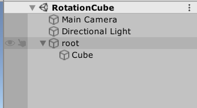
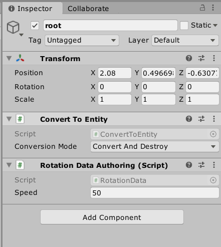
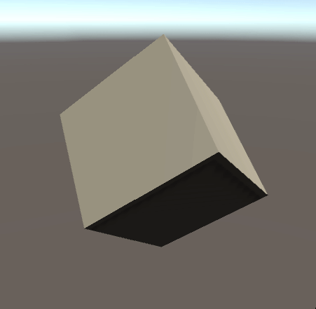
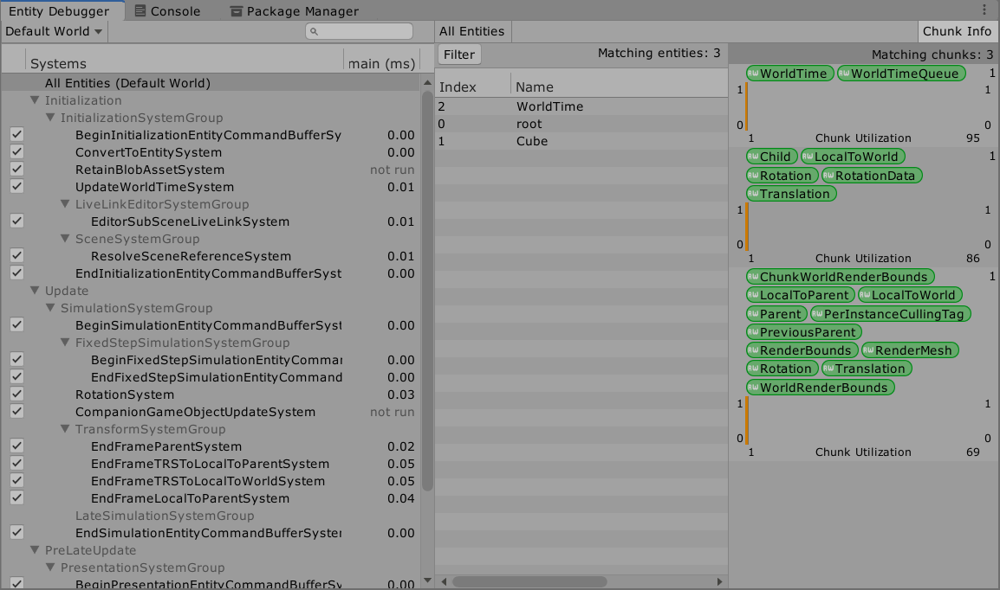
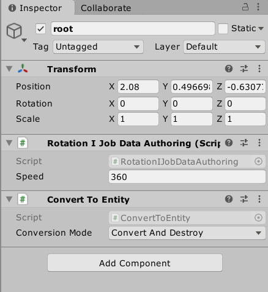

packages:
Hybrid Renderer — 提供用于渲染ECS实体的系统和组件。Hybrid Renderer不是渲染管道：它是一个收集渲染ECS实体所需的数据并将此数据发送到Unity现有渲染架构的系统。


convertToEntity 用来将实例转换为Entity
RotationData.cs
using Unity.Entities;
[GenerateAuthoringComponent]
public struct RotationData : IComponentData
{
public float speed;
}
将[GenerateAuthoringComponent]属性添加到IComponentData声明中。 Unity自动生成一个MonoBehaviour类，该类包含组件的公共字段，并提供一个Conversion方法，将这些字段转换为运行时组件数据，这样才能将data最为组件挂载到GameObject上，并暴露公共属性在属性面板上。
[GenerateAuthoringComponent]
RotationSystem.cs
using Unity.Entities;
using Unity.Jobs;
using Unity.Mathematics;
using Unity.Transforms;
public class RotationSystem : SystemBase
{
protected override void OnUpdate()
{
float deltaTime = Time.DeltaTime;
Entities.ForEach((ref Rotation rotation,in RotationData rotationData) =>
{
rotation.Value = math.mul(math.normalize(rotation.Value),quaternion.RotateY(math.radians(rotationData.speed * deltaTime)));
}).ScheduleParallel();
}
}
效果

检视Entity Debugger面板

IJobChunk的使用
组件类型的唯一组合称为原型（Archetypes），而原型内部以块（chunk）为单位存储，即当一个块容量满了就会重新开启一个块来存储
可以通过IJobChunk来逐块遍历数据，达到快速读取和批量处理的目的，更多的代码设置换取更高的性能。

RotationIJobData.cs
using Unity.Entities;
using System;
[Serializable]
public struct RotationIJobData : IComponentData
{
public float speed;
}
RotationIJobDataAuthoring.cs
using Unity.Entities;
using UnityEngine;
public class RotationIJobDataAuthoring : MonoBehaviour, IConvertGameObjectToEntity
{
public float speed = 360;
public void Convert(Entity entity, EntityManager dstManager, GameObjectConversionSystem conversionSystem)
{
var data = new RotationIJobData { speed = speed };
dstManager.AddComponentData(entity, data);
}
}
RotationIJobSystem.cs
using Unity.Burst;
using Unity.Collections;
using Unity.Entities;
using Unity.Jobs;
using Unity.Mathematics;
using Unity.Transforms;
public class RotationIJobSystem : SystemBase
{
//要处理的实体集
EntityQuery entityQuery;
protected override void OnCreate()
{
//缓存指定类型的查询
entityQuery = GetEntityQuery(typeof(Rotation), ComponentType.ReadOnly<RotationIJobData>());
}
//定义作业块结构体
[BurstCompile]
struct RotationJobChunk : IJobChunk
{
public float deltaTime;
public ComponentTypeHandle<Rotation> RotationType;
[ReadOnly] public ComponentTypeHandle<RotationIJobData> RotationIJobType;
public void Execute(ArchetypeChunk chunk, int chunkIndex, int firstEntityIndex)
{
//通过原型块获取实体数组
var rotationChunk = chunk.GetNativeArray(RotationType);
var rotationIJobChunk = chunk.GetNativeArray(RotationIJobType);
for (int i = 0; i < chunk.Count; i++)
{
var rotation = rotationChunk[i];
var rotationData = rotationIJobChunk[i];
rotationChunk[i] = new Rotation
{
Value = math.mul(math.normalize(rotation.Value),quaternion.RotateY(math.radians(rotationData.speed * deltaTime)))
};
}
}
}
protected override void OnUpdate()
{
//实例化作业并调度
var rotation = GetComponentTypeHandle<Rotation>();
var rotationData = GetComponentTypeHandle<RotationIJobData>(true);
var job = new RotationJobChunk(){
RotationType = rotation,
RotationIJobType = rotationData,
deltaTime = Time.DeltaTime
};
Dependency = job.Schedule(entityQuery,Dependency);
}
}